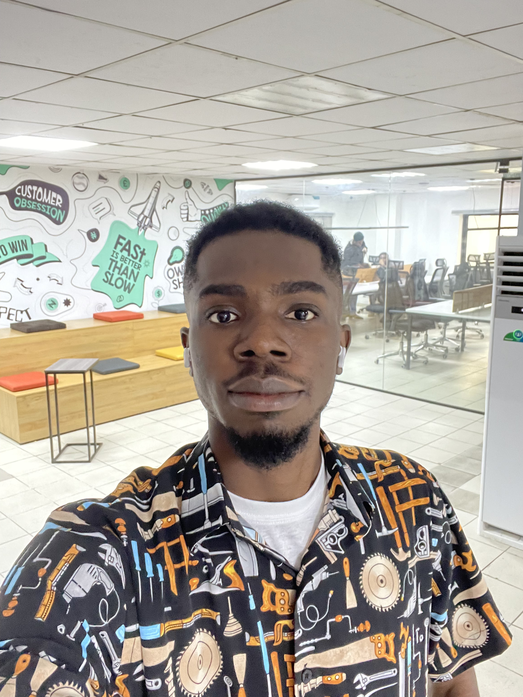

Lucky Nkwocha (Software Engineer)
I'm interested in distributed systems, machine learning and cloud engineering

About Me
-
I have deep interest in semicondutor electronics and computer science.
-
I love writing code in C/C++ and I swear by their standard libraries.
- I am fluent in Python and Java.
- Routinely, I write Javascript, obviously for web programming.
-
My favorite algorithm is the RSA cryptographic encryption algorithm.
- My primary shell is bash.
- My text editor is Vim.
- I am all for the obliteration of the Windows operating system.
-
I do most of my development in Linux primarily Ubuntu with Gnome DE.
-
I am strongly for the jetissoning of all frontend frameworks. We are
better off writing vanilla javascript and decreasing time to first
paint.
- I identify as a follower of the old ways.
- I am not a fan of social media.
-
I am always up for a good intellectually stimulating conversation with
someone who can match my intellect.
-
I have been a chess player for a year short of a decade but I don't
think I ever got good at it.
-
I am most likely to defeat you in a game of chess still. Apologies and
no apologies.
-
I'm always looking for new challenges and interesting stuff to keep me
occupied.
- I am a firm proponent of liberalism and social democracy.
-
I am all for an egalitarian society and the abrogation of social
hierachies.
-
Nowadays, I deal with fun things like system architecture, networking,
deep neural networks, compiler construction and operating system design.
- Feel free to send me a message if you need help with anything.
More..
-
I do a lot of recreational reading because I am interested in knowing a
lot of stuff.
-
I love good music. I recently went down the pre 90's rabbit hole; no
regrets.
- I conciously make efforts to increase my English vocab.
- I recently picked up French and Spanish. Don't ask me why.
- I read a lot. I have a somewhat utopian dream to spend half my life reading.
-
You can find me lurking around intelligent spaces like Quora and Reddit.
-
I am searching for my significant other, if you have any meaningful
information that can aid my search, shoot me an
email.
I have a lot of hobbies but not a lot of free time
-
If you have any questions, get in touch with me via
email.
-
If you've an offer, dicussion or opportunity that might make my life
more interesting, shoot me an email.
-
For the reasons stated above, I will only respond to those proposals
that are a good match for my schedule and interests.
-
I have both WhatsApp and Telegram. If you know me personally, we
probably already connected on WhatsApp. If not, here is my twitter.
I have a poorly written blog and I am lazy to
put it in order
Want to support my work? I appreciate your generosity. In my stead, please donate to charitable causes within your locale. You have my utmost gratitude.